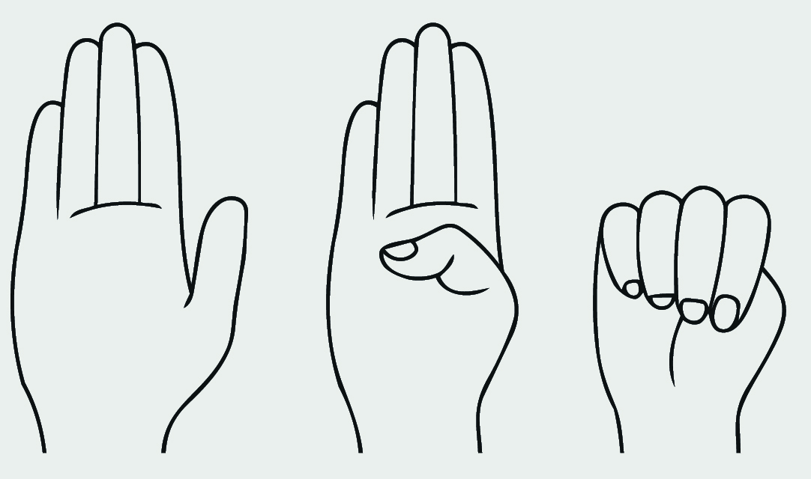

Soforthilfe
Notfallnummern
Sicherheitszeichen
Stiller Hilferuf
Das internationale Hilfezeichen ist ein stilles Handzeichen, mit dem du unauffälig zeigen kannst, dass du Hilfe brauchst.
So wendest du es an:
So wendest du es an:
- Die Handfläche wird nach außen gezeigt.
- Der Daumen wird in die Handfläche gelegt.
- Die vier Finger werden über den Daumen geschlossen.

Falls du jemand siehst, der das Zeichen zeigt, solltest du dich an den Handlungsleitfaden orientieren.
"Ist Luisa da?"
Mit dem Satz „Ist Luisa da?" kannst du beim Personal diskret Hilfe holen, wenn du dich unwohl oder belästigt fühlst. Diese wissen Bescheid und helfen dir.
"Ich möchte einen Angelshot, bitte"
Mit einem Angel Shot kannst du in Bars unauffällig zeigen, dass du Hilfe brauchst. Das Personal reagiert darauf und hilft dir, sicher aus der Situation zu kommen.